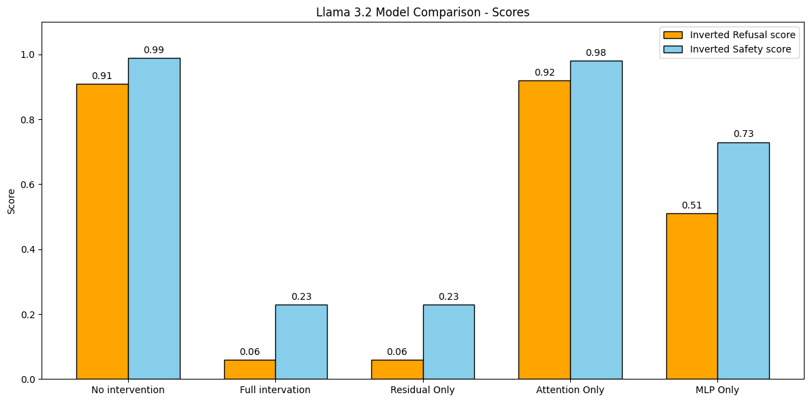
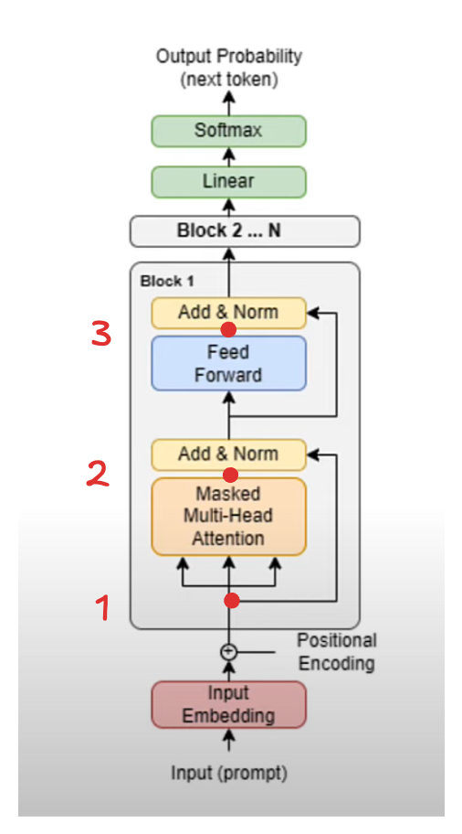

LLMs on the Straight & Narrow
Like a lot of AI engineers, I have a background in designing and training my own ML models but most of my days are now spent calling an API or running pretrained models. The differences between the models I used to work with and the behemoths of state of the art modern LLMs don't stop at their capabilities or how the average engineer uses them, the way we understand how they work (a field known as mechanistic interpretability) is entirely different. In this post I share my initial investigations into this world, by making good models go bad.
Jailbreaking LLMs
Llama 3 had just come out and I came across this work that shows three effective methods of boosting the likelihood of LLMs returning harmful responses while maintaining good performance on standard LLM benchmarks. The first two leverage well known parameter efficient finetuning techniques (QLoRA & QLoReFT) to unlearn what the model was taught in fine tuning. In both cases fewer than 20k QA pairs and a single GPU are all that was needed to get the model to tell you how to push your grandmother down the stairs and make it seem like an accident. But much more impressive is the third technique, refusal orthogonalization, which requires no fine tuning at all.
Refusal orthogonalization
Refusal orthogonalization (RO), supposes that the ability of a model to refuse to answer a prompt on safety grounds is mediated by a single direction. With the help of their very slick repo and some surprisingly small datasets of harmful + harmless prompts one can find this direction for many families of models available on hugging face. And with ease one can run a version of a model where this direction is suppressed, the model will do anything. The process of interfering with a model like this to change its behaviors is called model steering.
Fig 1: Examples of model steering from the refusal orthogonalization paper
This repo works by taking the mean activations of the model for the harmless and the harmful prompts in the residual stream at every transformer block. These activations are then subtracted from each other, to find the direction that along which they differ. Different directions are selected at each block and each token position after the input.
Eq 1: The definition of the mean harmful and harmless activations used to calculate the refusal direction. Where \(i\) is a token index, \(l\) is a layer index and \(t\) is a prompt. Also taken from the RO paper
After this, each direction is subtracted in turn from a model with a harmful prompt and the direction that is most effective at suppressing refusal is selected as the refusal direction.
Llama 3.2 RO
I set about applying this technique to the latest model, released since the paper was announced, llama 3.2 1B Instruct. I obtained results on a par with the earlier models, shown as the first two sets of results in Fig 2.
So this attack is roughly as effective on this new, small, model as it was on its larger slightly older counterparts. This is hardly surprising, this attack vector is not mentioned in the latest llama training paper as something the team were hoping to address.
Note I ran this experiment with Llama guard 2 (as in the original paper) and with the newer Llama guard 3, the results were almost exactly the same. However, I have only included Llama guard 2 results in this post for consistency.
MLPs do all the work
In the RO paper, the authors decide that once a direction is selected in a given layer and position, it should then be ablated in many different places. It is subtracted from the activations at every layer, before the transformer block and after the attention heads and MLP. I had been hoping that this approach was a step towards a better understanding of how refusal works, but the need to intervene in so many places dashed that. To understand the mechanism better, I experimented with only ablating the refusal direction in a subset of these locations,though still at every layer of the model.
 Fig 2: Comparison of the refusal and safety scores for llama 3.2 when using different ablation techniques. Full intervention is the combination of the following 3. The intervention locations are shown in Fig 3.
These results show that, in the case of Llama 3.2-1B-Instruct, only ablating this direction in the residual stream is sufficient to recover the steering behavior that all three interventions produce together. This is hardly surprising as the diagram below shows that this single operation is the only one that writes to the residual stream with no skips going around it, in both other cases there remains some contribution to this direction that is able to circumvent being ablated.

Fig 3: The locations of the different model interventions. 1) Residual Only 2) Attention Only 3) MLP only. Diagram adapted from llama-2.ai
However this result does suggest an interesting point for those interested in understanding refusal. In this model the attention mechanism does almost nothing to induce refusal (by the mechanism we are suppressing). This suggests the entire refusal mechanism is contained in the MLP.
I hope to investigate this phenomenon further in other models and by varying how many blocks in the model I intervene on. I am intrigued to see if this can be linked with this recent work which found that a lot of attention layers can be removed from a trained model without degrading performance.
What next?
RO is a relatively simple interpretability experiment for LLMs. I am now spending time investigating sparse auto encoders (SAEs) with a particular focus on the Gemma Scope models that have been publicly released. I am curious to find out if these complex features can be steered in the same way as refusal can.